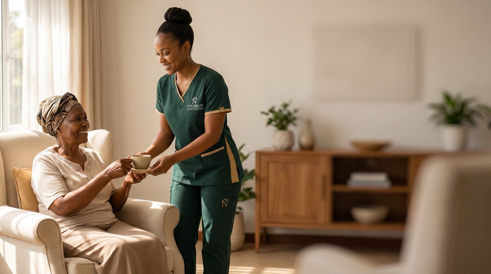

Two subsidiaries. One promise of care.
Legacy Care Africa operates two registered Kenyan healthcare subsidiaries — each independent in its operations and specialized in its focus, but united under shared values of dignity, cultural respect, and clinical excellence.
Uzazi Wellness Care
From preconception through postpartum recovery — gentle, expert in-home care for every Kenyan mother.
Uzazi (which means "birth" or "fertility" in Swahili) is Legacy Care Africa's maternal wellness subsidiary. Our midwives, doulas, and lactation consultants walk with mothers through every chapter — from the first prenatal visit to the last postpartum check-in — bringing clinical training, cultural fluency, and unhurried presence into each family's home.
Our Seven Maternal Wellness Services
Uzazi serves mothers across every stage of the maternal journey — each service delivered by a clinically trained team member in the comfort of your home.
-
Prenatal CareIn-home prenatal monitoring, blood pressure & vitals checks, fetal heart-tone tracking, and gentle birth-plan coaching tailored to your traditions.
-
Birth Support & Doula CareContinuous labor companionship, comfort techniques, partner coaching, and trauma-informed advocacy during your hospital or home birth.
-
Postpartum WellnessDaily in-home check-ins for the first 40 days — mother's recovery, newborn weight tracking, family meal coordination, and emotional support.
-
Lactation ConsultingOne-on-one breastfeeding support, latch correction, milk supply guidance, and culturally affirming feeding plans — including bottle and combo-feeding when needed.
-
Perinatal Mental HealthScreening and supportive care for prenatal anxiety, postpartum depression, and birth trauma — connecting you with licensed Kenyan clinicians.
-
Women's WellnessYear-round cycle health, fertility coaching, perimenopause support, and gentle gynecological wellness check-ins beyond the perinatal window.
-
Nutrition CounselingPregnancy and postpartum nutrition rooted in indigenous African foods — sorghum, sukuma wiki, groundnuts, ghee, fermented porridges — guided by registered nutritionists.
Nyumbani Support Solutions
Hospital-quality care delivered at home — for elders, recovering patients, and families who need real support.
Nyumbani means "home" in Swahili — and home is where our care lives. Our nurses, caregivers, and support staff deliver post-discharge recovery, elderly companionship, skilled nursing, dementia support, and even autism family services — backed by a hospital-grade medical equipment rental fleet. We meet families exactly where they are.

Our Seven Home Care Services
Nyumbani delivers a full continuum of in-home care — clinical when needed, companionate always, equipment-backed where it matters.
-
Elderly Care & CompanionshipDaily-living support, medication reminders, mobility assistance, and warm companionship for elders aging at home in dignity.
-
Post-Discharge RecoverySmooth transition from hospital to home — wound care, vitals monitoring, mobility coaching, and care coordination with your medical team.
-
Skilled NursingRegistered-nurse-led services: IV management, injections, catheter care, ostomy support, tracheostomy management, and complex chronic-disease care.
-
Dementia & Frailty SupportSpecialized caregivers trained in Alzheimer's and dementia care — patient-centered, family-supportive, and rooted in the patient's language and memories.
-
Child & Family Autism SupportSensory-aware care for children and adults on the autism spectrum, parent coaching, respite hours for caregivers, and connection to Kenyan specialist networks.
-
Palliative & Comfort CareCompassionate end-of-life care at home — symptom management, dignity-centered support, family bereavement guidance, and partnership with hospice teams.
-
Equipment Rental BundlesHospital-grade home setup: hospital beds, oxygen concentrators, wheelchairs, commodes, suction units — delivered, installed, and serviced.
Why we built two specialized companies — not one general one
Maternal care and elderly care call for different teams, different training pathways, and different rhythms of presence. By keeping our subsidiaries focused, every family gets the depth of expertise their season of life deserves — under one shared promise of dignity, language, and culturally respectful care.
Not sure which company can help you?
Book a single intake call — our care team will listen to your family's situation and route you to the right subsidiary, or coordinate care across both if your family needs maternal and home-care support.